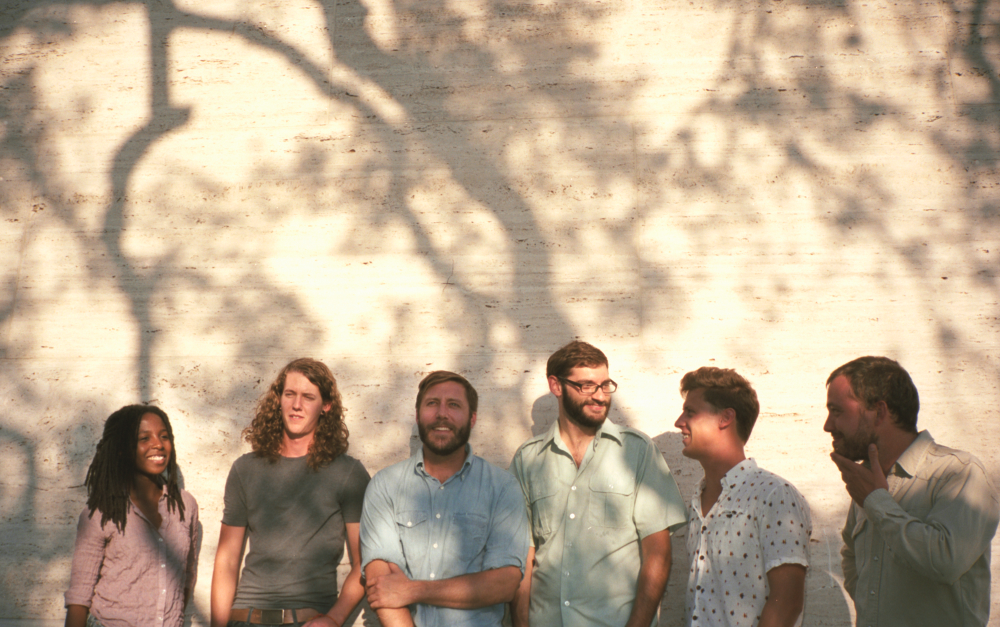

Balmorhea (произносится Bal-More-Ray). Мы группа из Остина, штата Техас. На данный момент, стостим из шести человек. Наша музыка в жанрах: современная классика, инструментальная, пост-рок. Основатели группы, это Роб Лоу и Майкл Мюллер. Случилось это в 2006 году. Уже выпустили 6 полных альбомов и еще 1 винил. На наше творчество сильно повлиял один небольшой городок "Западный Техас", с населением в 500 человек. В нём мы жили некоторое время, черпая вдохновение. Наблюдение за жизнью обычных жителей обычной деревеньки. Уединение с природой, когда начинаешь чувствовать тихий шепот ветра, язык солнца, знаки облаков, погружаться в умиротворенность водных течений. Прогулки под ночным небом, свет луны и прекрасный блеск сзвузд, который ни за что не увидишь в городе. Всё это сильно повлияло на наше творчество.
Изначально наш коллектив состоял из двух человек. Со временем он начал расширяться. Мы начали встречать разных замечательных людей, желающих заниматься твореством с нами. Наша музыка начала приобретать новые тона, становиться более разнообразной, сложной. Добавились новые инструменты, что позсолило творить совсем иные композиции. Все тут очень хорошие и теплые люди. Очень приятно творить именно с ними.
Так же, в нашем репуртуаре есть альбом, полностью написанный, для музыкального сопровождения одного небольшого, но очень красивого и лампового фильма - Guest Room (short film). Обязательно посмотрите его, я уверен он очень понравится любителям нашего творчества.
Роб Лоу

Всем привет. Я Роб Лоу, один из основателей нашей замечательной группы. Вообще идея основать группу появилась, когда Я и хороший друг Майкл Мюллер, о нем вы еще сможете почитать, встретили одного занимательного человека. Он был бездомным и зарабатывал себе на жизнь играя на скрипке. Его музыка, его творчество, да и сам он, произвели на нас огромное впечатление. Мы уже давно увлекались музыкой, к тому моменту. Тогда нам очень захотелось играть вместе с ним. Это и послужило толчком к созданию группы. Правда, в итоге, с Мелиони (так звали того парня), немного не сложилось, но вот группа всё равно была создана.
Ну а если рассказать конкретно о себе, то тягу к музыке и почувствовал еще давно. Семья у нас была музыкальная. Мать любила играть на Пианино, отец играл на скрипке. Братьев и сестёр не было. Вся эта радужная музыкальная атмосфера и помогла мне так прочувствоваться музыкой. Сейчас творчество нашей группы очень походит на то, что я обычно чувствовал дома, среди музыки. Да, кстати, в групе я играю на пианино, гитаре и банджо.
Ну а если рассказать конкретно о себе, то тягу к музыке и почувствовал еще давно. Семья у нас была музыкальная. Мать любила играть на Пианино, отец играл на скрипке. Братьев и сестёр не было. Вся эта радужная музыкальная атмосфера и помогла мне так прочувствоваться музыкой. Сейчас творчество нашей группы очень походит на то, что я обычно чувствовал дома, среди музыки. Да, кстати, в групе я играю на пианино, гитаре и банджо.
Майкл Мюллер

Привет, люди! Я Майкл Мюллер, один из основателей нашей замечательной группы. Чуть выше, мой коллега уже рассказал об основании нашей группы, но я немного дополню, со своей стороны. Да, печально что с Мелиони не сложилось, ведь именно его можно считать лавным основателем, вдохновителем, нашей группы. Но тут не об этом. Вообще, был один момент, когда мы с Робом, чуть не забосили идею группы. Это было из-за смерти Мелио. Но, всё же, свет перевесил. Роб тогда сильно помог мне. Он всегда такой яркий, веселый, буквально заражает своей позитивной энергетикой. Думаю именно он и делает нашу группу такой классной.
Ну что, пора бы и конкретно о себе рассказать, ведь вы именно для этого и читаете, скорее всего. В группе я играю на гитаре, пианино и банджо. Да-да, как и Роб. Ну вот так слажилось, похожие у нас вкусы. Местами нас даже братьями считают. Семья моя была обычной, ни чем особо не выдиляющейся. Музыки тоже особо не было. Любил её с детства. Музыке я учился в Техасской музыкальной школе. Она у нас была только одна, но зато большая и классная. Чему угодно там могли научить. В неё же, кстати, ходил и Роб. Так что, с ним вместе мы уже давно знакомы.
Ну что, пора бы и конкретно о себе рассказать, ведь вы именно для этого и читаете, скорее всего. В группе я играю на гитаре, пианино и банджо. Да-да, как и Роб. Ну вот так слажилось, похожие у нас вкусы. Местами нас даже братьями считают. Семья моя была обычной, ни чем особо не выдиляющейся. Музыки тоже особо не было. Любил её с детства. Музыке я учился в Техасской музыкальной школе. Она у нас была только одна, но зато большая и классная. Чему угодно там могли научить. В неё же, кстати, ходил и Роб. Так что, с ним вместе мы уже давно знакомы.
Айша Бёрнс

Хай. Я Айша Бёрнс и я из Феникса. Да, фамилия мне замечательно подходит, особенно к характеру. Присоеденилась к ргуппе я в 2006 году. Эти два парня, Майкл и Роб, я сразу в них что-то увидела. Какой-то заворажвающий "огонь" в их душах. Сразу же захотелось быть с ними. Сама играю я на скрипке, прекрасный инструмент. Он действительно может передать ту красоту, что я чувствую в душе. Вообще я давольно энергичный человек, всё время движусь, ищу что-то новое, открываю неизведанное этого мира. Жизнь ведь так прекрасна, в ней столько всего, что еще бы хотелось попробовать. Постоянно не хватает времени на всё, чего бы хотелось.
Но знаете, в жизни же не может быть всегда всё так. Думаю вы уже слышали, одну из ниших лучших, и мою любимую, песню - The Winter. Она была написана в память об одно человеке. Познакомились мы с ним в университете. Мы вместе занимались музыкой. Он был старше меня, на несколько лет. Рядом с ним всегда было так хорошо, он меня действительно понимал, чувствовал. Но время шло. И вот наступил момент окончания его обучения тут, и ему нужно было уезжать. Так хотелось сделать это вместе с ним, но мне еще оставалось два года обуения, не хотелось всё кидать. Хотя сейчас понимаю, что стоило бы, наверное. Да, пусть это и было уже много лет назад, до того, как я вступила в Balmorhea, но мне очень хотелось оставить память об этом. Так и была написана эта холодная, но очень красивая, запоминающаяся песня - The Winter.
Во всём и всегда есть две стороны.
Но знаете, в жизни же не может быть всегда всё так. Думаю вы уже слышали, одну из ниших лучших, и мою любимую, песню - The Winter. Она была написана в память об одно человеке. Познакомились мы с ним в университете. Мы вместе занимались музыкой. Он был старше меня, на несколько лет. Рядом с ним всегда было так хорошо, он меня действительно понимал, чувствовал. Но время шло. И вот наступил момент окончания его обучения тут, и ему нужно было уезжать. Так хотелось сделать это вместе с ним, но мне еще оставалось два года обуения, не хотелось всё кидать. Хотя сейчас понимаю, что стоило бы, наверное. Да, пусть это и было уже много лет назад, до того, как я вступила в Balmorhea, но мне очень хотелось оставить память об этом. Так и была написана эта холодная, но очень красивая, запоминающаяся песня - The Winter.
Во всём и всегда есть две стороны.
Кэндэлл Кларк

Я рос инициативным и уверенным в себе ребёнком. В 12 лет я получил первую работу — мойщик посуды небольшой закусочной в Вирджинии, а в 16 лет подрабатывал швейцаром. В ранние годы своей жизни Я много путешествовал со своей семьёй, проживая в таких местах, как Гаити или коммуна в Колорадо. «Отец моей мамы служил в воздушных войсках, поэтому кочевнический образ жизни был чем-то вроде нормы».
Ко времени окончания школы Я подал свои документы в Университет искусств в Филадельфии, и был принят. Он специализировался в области изучения художественных искусств, в частности, живописи. Позднее Я забрал документы из Университета искусств и перевёлся в Университет изобразительных искусств в Нью-Йорке. Будучи студентом, Я написал сценарий, и сыграл одну из главных ролей в своём собственном фильме «Crying Joy» («Плачущая радость»).
Дилан Рик

Здрасте. Я индейка. Курлы. Родилась и выросла я в каких-то лесах. Жизнь моя была очень интересна и наполнена разным ипроисшествиями. Однажды я нашла здаравенный такой орех. Но он был еще не раскрытый. Но таких размеров орехи больая редкость. Мне очень хоелось им обладать, это бы дало мне высоки статус, среди остальных индеек. Тогда я решила расколость его. Я, как истенно умная и прошареная птица, семества Голубиных (на самом деле фазаньих), нашла лучшее решение. Я решила разбить его чем-нибудь истенно-твёрлым, крепким и желательно ненужным. Тогда я залезла на дерево и нырнула на орех вниз головой! Не помню что было дальше, но я уверена, что я победила его, ведь теперь все индейки оьходят меня стороной, не водятся со мной. Это однозначно потому, что боятся меня и уважают. Правда они, почему-то так же и не пускают меня в свою общину, важаки, почему-то не боятся меня и прогоняют. Но это потому что они слишком тупые и не понимают на сколько я крута! Ну что с них, дураков, взять.
Вот видите, какая у меня интересная жизнь была. А сейчас даже еще интереснее. Однажды я встретила какого-то мужика с ружьем. Затем раздался громкий хлопок. Я больше не чувствую своего тела, но зато я теперь умею летать! Вот что значит истенное могущество! Правда, почему-то, никто не выказывает мне почета и уважения, да и вообще не замеачает. Но да не о том история. В общем тот охотник взял какую-то индейку, похожую на меня и понес домой. Там женщина общипала меня, я была совсем голая. Затем она выпотрошила ту индейку. Затем она взяла какую-то маленькую жареную индеечку и запихнула её прямо внутрь той, похожей на меня. Затем она поставила её в духовку. Спустя некоторое время её доставли оттуда и подали на стол. Вокруг неё собралась куча народа, все что-то говорили про день благодарения. Потом один мужчина, собрал вокруг детишек. Был паень, лет 14 и девушка, лет 16. Мужчина разрезал индейку. Девочка запищала! Начала кричать - "АААА. Как вы могли! Вы же убили беременную индейку. В ней же была маленькая индеечка, прямо внутри. Она же была такая маленькая, миленькая. Как вы могли!", - и бросилась в слёзы. А вот парень, что стоял рядом, и большой мужчина, почему-то громко засмеялись. Странные они, эти люди. Вот такая вот интересная у меня жизнь.
Вот видите, какая у меня интересная жизнь была. А сейчас даже еще интереснее. Однажды я встретила какого-то мужика с ружьем. Затем раздался громкий хлопок. Я больше не чувствую своего тела, но зато я теперь умею летать! Вот что значит истенное могущество! Правда, почему-то, никто не выказывает мне почета и уважения, да и вообще не замеачает. Но да не о том история. В общем тот охотник взял какую-то индейку, похожую на меня и понес домой. Там женщина общипала меня, я была совсем голая. Затем она выпотрошила ту индейку. Затем она взяла какую-то маленькую жареную индеечку и запихнула её прямо внутрь той, похожей на меня. Затем она поставила её в духовку. Спустя некоторое время её доставли оттуда и подали на стол. Вокруг неё собралась куча народа, все что-то говорили про день благодарения. Потом один мужчина, собрал вокруг детишек. Был паень, лет 14 и девушка, лет 16. Мужчина разрезал индейку. Девочка запищала! Начала кричать - "АААА. Как вы могли! Вы же убили беременную индейку. В ней же была маленькая индеечка, прямо внутри. Она же была такая маленькая, миленькая. Как вы могли!", - и бросилась в слёзы. А вот парень, что стоял рядом, и большой мужчина, почему-то громко засмеялись. Странные они, эти люди. Вот такая вот интересная у меня жизнь.
Трэвис Чапман

Ну что я могу рассказать о себе. Вообще, в группе я играю на контрабасе. Вообще мне очень нравится наш коллектив, хотя я в нем пока и не очень давно. Все тут замечательные ребята. Если немного о себе, то рос я в обычной Техасской семье. Вообще давольно строгие порядки были у нас. Брат был старший, постоянно донимал меня. Но я всё равно старался ровняться на него, пример для подражания, как-никак. Играть я начал лет с 14. Вообще музыка всегда нравилась, сколько помню себя. Особенно близок мне, как раз, репертуар нашей группы. Классическая и инструментальная музыка, да это именно оно. Вообще, надеюсь мы долго просуществуем как группа, не хотелось бы терять связь с такими замечательными ребятами. Хоть даже если так и произойдет, я думаю мы всё равно не забудем друг-друга и будем общаться дальше, путь даже и не так плотно. Но это меня радует.